点击上方蓝字加入我们
快速弄懂：Clawdbot 是什么？ 印象派：更像 Manus 还是 Cowork？ Clawdbot 的独特“魅力”在哪里？ Clawdbot 有哪些“创意”使用场景？ 如何安装与配置 Clawdbot？ 揭开引擎盖：Clawdbot 是如何运转的？ 观察与展望：有哪些不足与挑战？
1
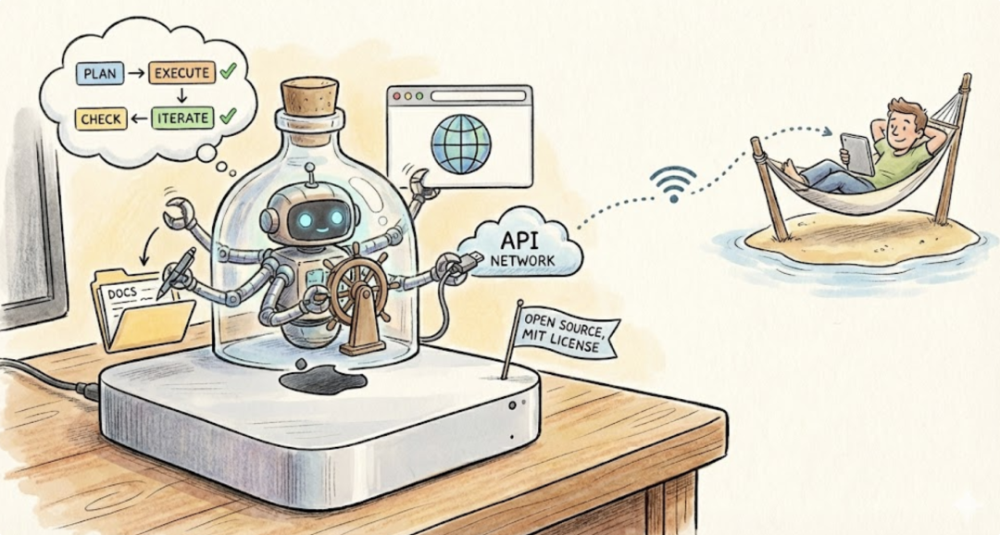
开源免费：完全开源免费！甚至还是极为宽松的MIT License（当然模型得自己准备，API 费用还要自己出）。 本地运行：这不仅是因为它可以本地部署，而是在设计上就是以“住在”你的电脑里为主要场景。 个人智能体：面向个人工作的智能体。注意是“ Agent ”，不是“ Chatbot ”（豆包），不是“ Copilot ”（Office Copilot）。
由于“智能体”概念的滥用，必须再次认识，如何才算真正的Agent？抛开复杂的ReAct、Skills 等概念，普通人可以这么去判断：
会规划：把任务目标拆分成多个步骤
会用工具执行动作：调用API、运行脚本、操作浏览器等
自我检查与迭代：失败重试、验证结果、对齐任务目标等
2
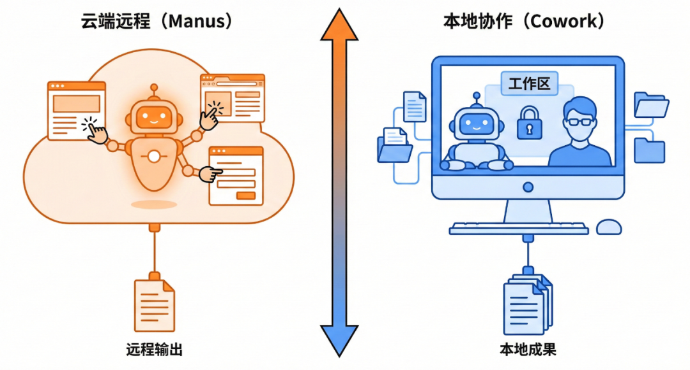
Manus：云端远程型
Cowork：本地协作型
3
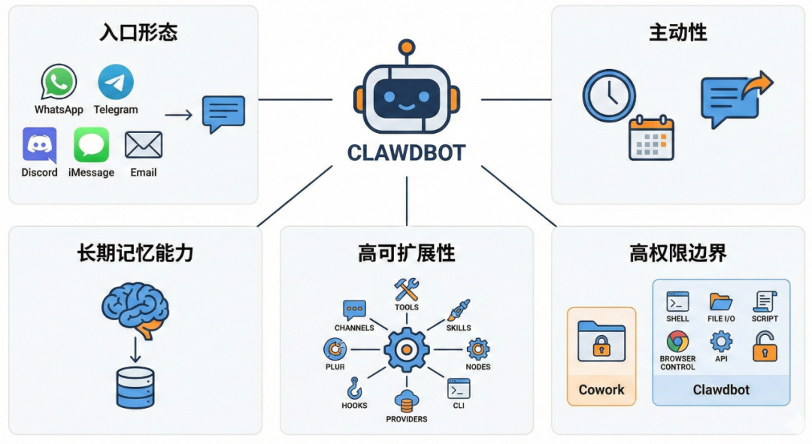
入口形态
主动性
长期记忆能力
高可扩展性
高权限边界
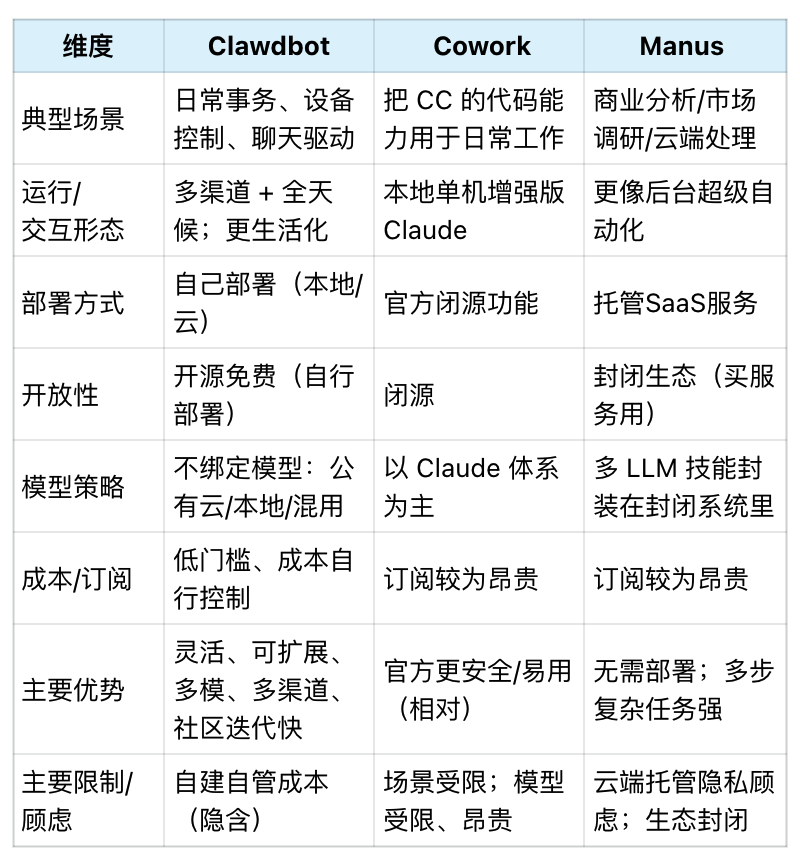
4
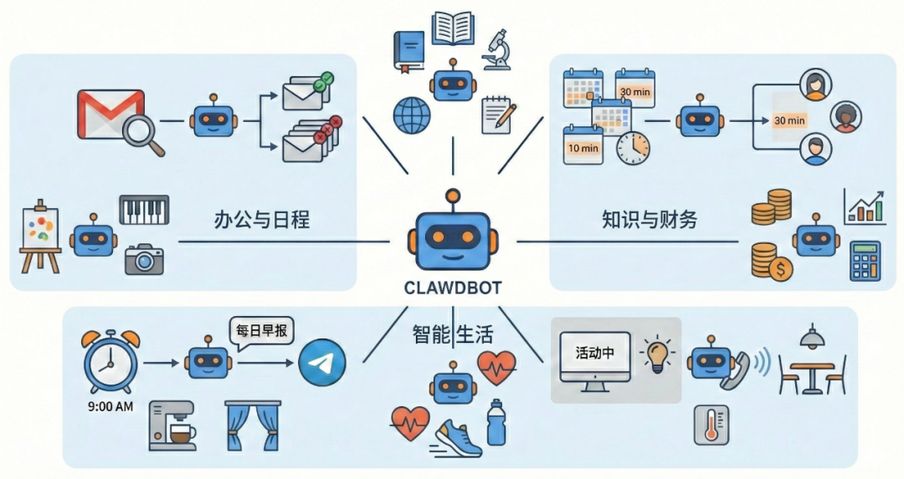
收件箱清理（Gmail 插件）
会议日程安排（ Calendar API）
日程提醒（定时任务 + 聊天渠道）
设备控制（本地状态 + IoT API）
更高阶的自主应变
5
curl -fsSL https://clawd.bot/install.sh | bashclawdbot onboard --install-daemon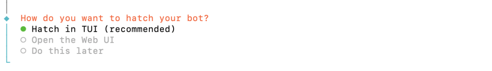
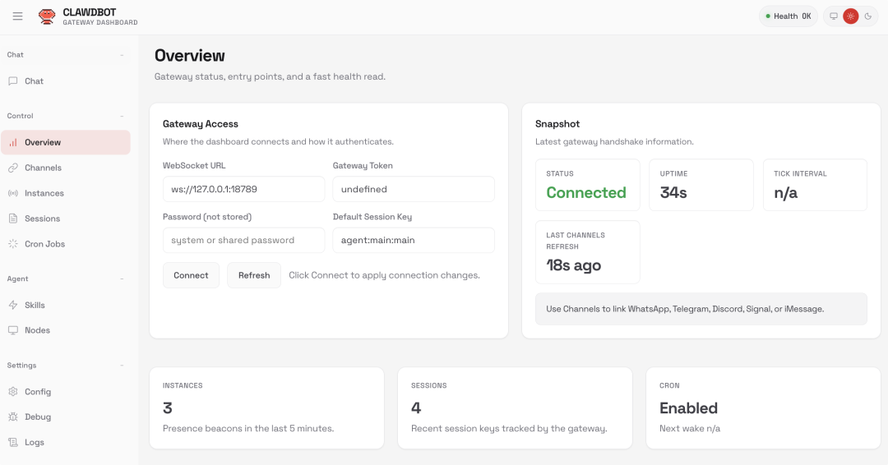
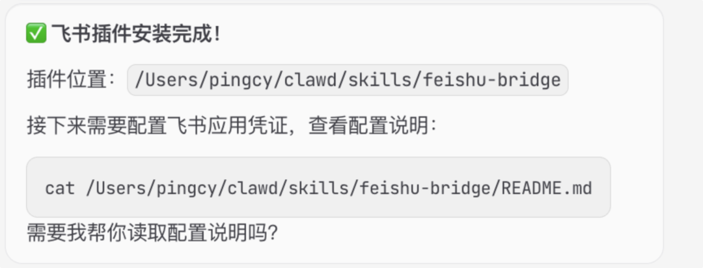
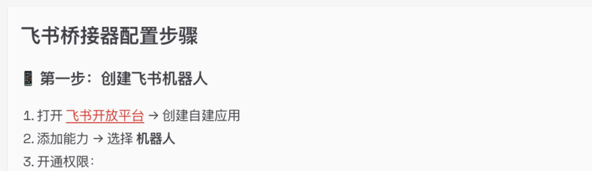
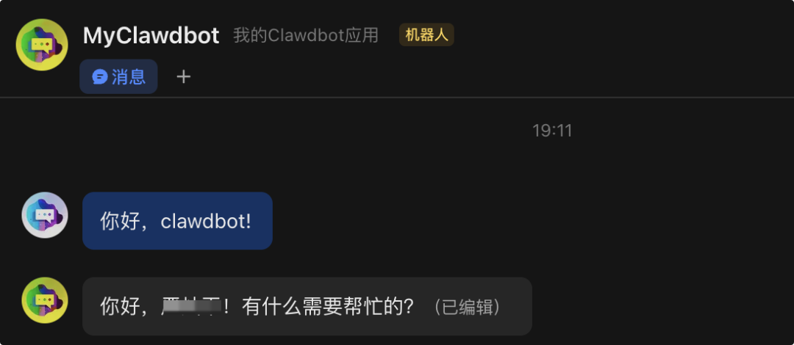
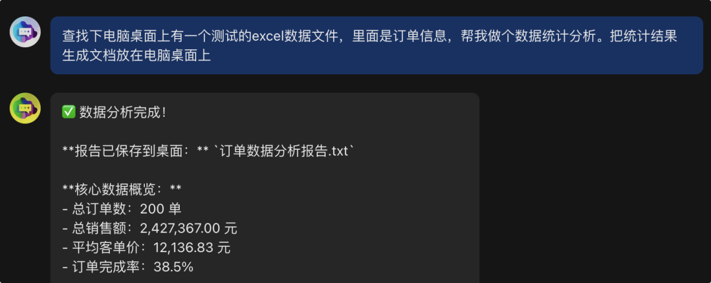
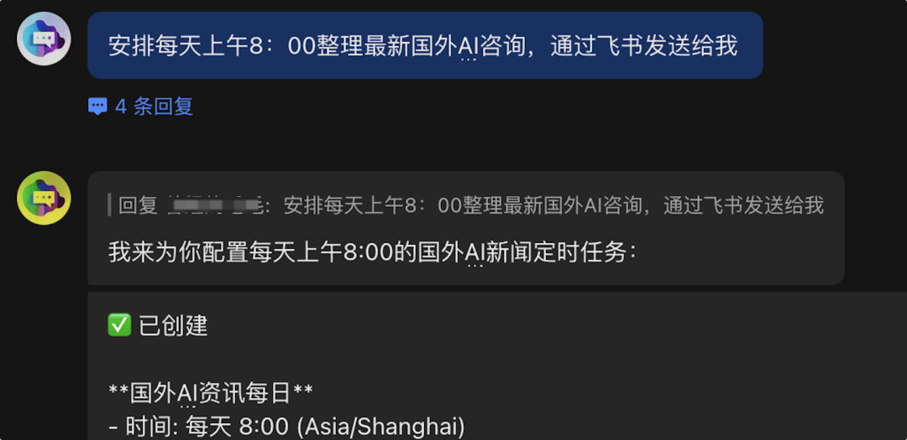
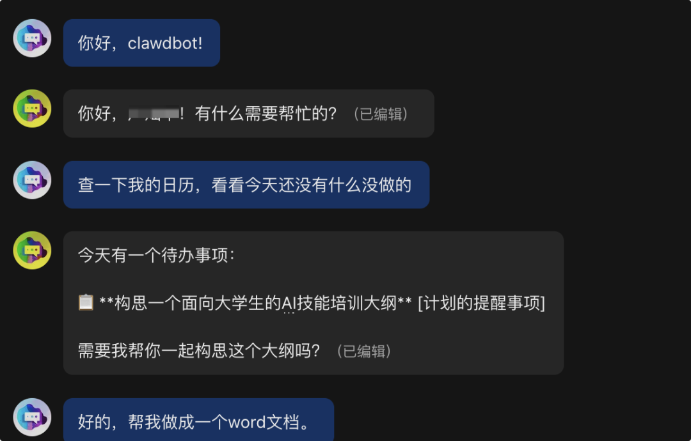
6
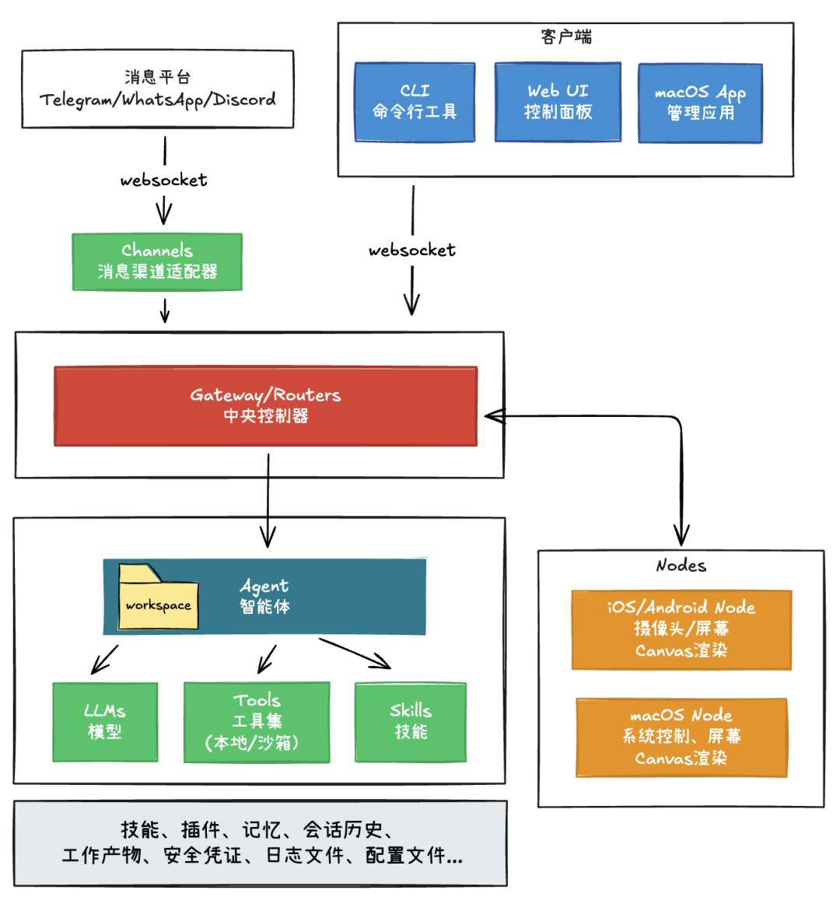
127.0.0.1:18789 端口。它负责管理会话、调度Agent任务、维持与各个聊天渠道的消息连接、管理配对设备与权限、协调其他Nodes能力等。几乎所有的用户消息与控制命令都需要从这里经过。调用某个 iPhone 的摄像头拍照，然后做后续处理 搜集服务器的数据，生成仪表盘界面（A2UI描述），然后推送到你的 iPad 上做展示（WhatsApp 等消息客户端无法支持复杂UI）
7
建议：正式使用切勿在存有敏感数据的主力机上裸跑，最好使用 Docker 容器或独立设备隔离运行。